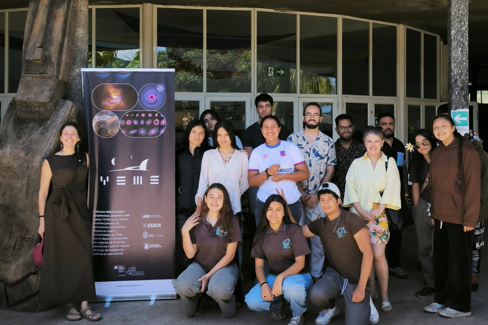
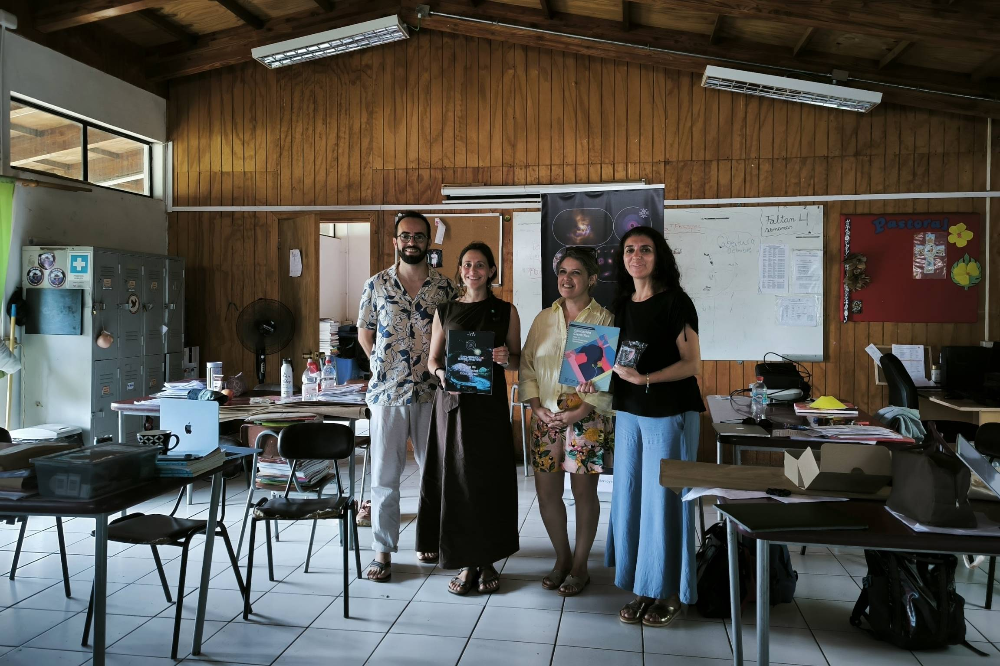
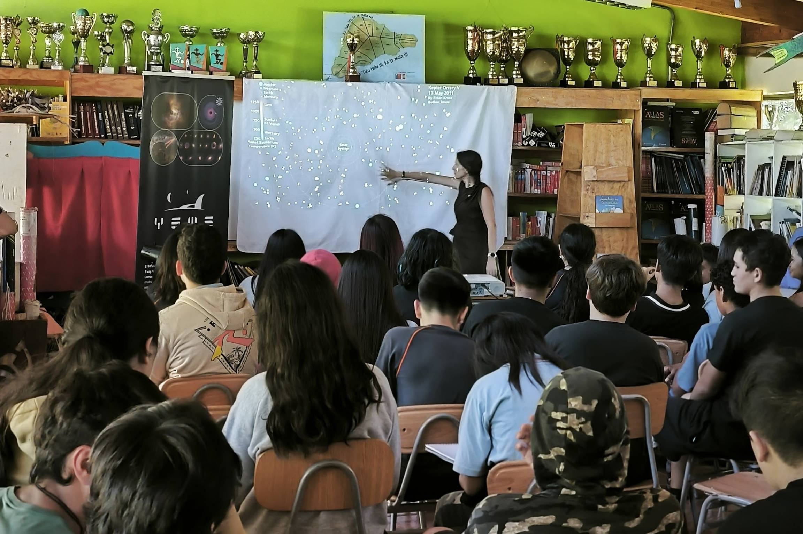
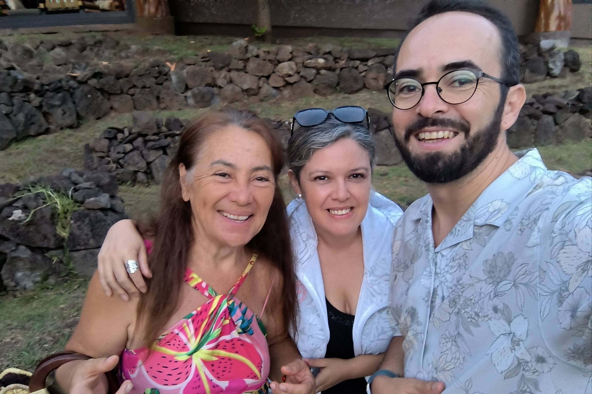

{kind=link}
Trabajo con estudiantes
Encuentro con jóvenes de la isla para discutir astronomía, cultura y educación.

Durante una visita colaborativa a Rapa Nui, integrantes y colaboradores del Núcleo Milenio sobre Exoplanetas Jóvenes y sus Lunas, YEMS, realizaron una serie de actividades comunitarias, educativas y de divulgación astronómica en el marco de un proyecto de Proyección al Medio Externo orientado a la co-creación de un libro infantil bilingüe, en español y rapanui, que conecte la astronomía moderna con los saberes ancestrales del pueblo rapanui.

La iniciativa busca acercar el conocimiento astronómico contemporáneo a niños, niñas y jóvenes de Rapa Nui, conectándolo con la cosmovisión, el territorio y la lengua rapanui. El resultado principal será un libro de actividades infantiles que promueva el aprendizaje de la ciencia a través de estrategias lúdicas, reforzando al mismo tiempo prácticas culturales y el uso de la lengua local, co-creado principalmente con la Academia de la Lengua Rapa Nui.
Uno de los objetivos centrales de la visita fue articular vínculos con el territorio y así fortalecer una red de colaboración local con actores educativos, culturales y comunitarios de la isla. Para ello, el equipo realizó reuniones de trabajo orientadas a la creación de conceptos, actividades de realidad virtual en escuelas para recoger intereses y preguntas de estudiantes, y un taller de Aprendizaje Basado en Proyectos con docentes, enfocado en las conexiones entre astronomía, currículo escolar, territorio y cultura.
La agenda contempló además actividades abiertas a la comunidad, incluyendo jornadas de divulgación astronómica, observación comunitaria del cielo, talleres para niños y niñas, y espacios de conversación en formatos cercanos y participativos. Estas instancias permitieron dialogar sobre astronomía moderna, exploración espacial y las formas en que distintas culturas han observado e interpretado el firmamento.
Entre las actividades destacó la participación del astrónomo Sebastián Pérez, investigador principal de YEMS, quien compartió con la comunidad reflexiones sobre los "visitantes interestelares", el estudio de otros sistemas solares y la importancia de construir puentes entre la ciencia contemporánea y los saberes tradicionales.
El libro será distribuido gratuitamente en escuelas de Rapa Nui y se promoverá su uso mediante talleres dirigidos a docentes de la isla. Además, se contempla la entrega gratuita de ejemplares en establecimientos del continente, para que estudiantes de otras regiones de Chile puedan aprender astronomía y conocer más sobre la cultura rapanui.
Con esta iniciativa, YEMS refuerza su compromiso con una astronomía conectada con la educación, el territorio y el diálogo intercultural. Al reunir ciencia de frontera, saberes ancestrales y co-creación comunitaria, el proyecto busca generar materiales educativos significativos para las nuevas generaciones y contribuir a la valoración del patrimonio cultural y lingüístico de Rapa Nui.
Información adicional
Este proyecto de Proyección al Medio Externo tiene como objetivo general promover la integración del conocimiento astronómico y los saberes tradicionales sobre el cielo mediante la co-creación de un libro de actividades infantiles, en español y rapanui, que vincule la astronomía moderna con el conocimiento ancestral del pueblo rapanui.
Algunas imágenes de las actividades realizadas junto a estudiantes, docentes, autoridades locales y miembros de la comunidad rapanui durante la visita de trabajo del proyecto PME.
Encuentro con jóvenes de la isla para discutir astronomía, cultura y educación.

Reuniones con docentes y actores educativos para la co-creación de contenidos del libro.

Actividades participativas para conectar la astronomía con el territorio y la cultura local.

Encuentros con colaboradores y representantes de la comunidad que participan en el proyecto.
{kind=link}
{kind=link}
{kind=link}